Welcome
I'm Aadhya Guragain, a Computer Science student passionate about IT systems, troubleshooting, and real-world tech support. Currently seeking an internship to apply my knowledge in Microsoft OS, networking, and basic hardware diagnostics.
I'm Aadhya Guragain, a Computer Science student passionate about IT systems, troubleshooting, and real-world tech support. Currently seeking an internship to apply my knowledge in Microsoft OS, networking, and basic hardware diagnostics.
I’ve just completed my first year as a BSc Hons Computer Science student at Biratnagar International College. I really enjoy solving problems, figuring out technical issues, and understanding how complex systems work. I’m eager to learn more and excited to join a team-oriented internship where I can grow my skills.
3D virtual museum game made as a college group project in Unity. Advanced Java GUI banking application made as a college project featuring multi-account management, deposit/withdraw operations, inter-account transfers, and file persistence for transaction history. Full-stack web application using FastAPI backend and JavaScript frontend. Performs real-time port scanning with socket programming, IP validation, and async API communication. Advanced Python diagnostic tool utilizing psutil library to generate professional HTML reports featuring: real-time CPU core monitoring, memory usage analysis, multi-partition disk scanning, network interface detection, and automated timestamp logging for IT troubleshooting. Focus timer app with a cute tomato theme, customizable work/break intervals, smooth animations, and productivity stats. Available online for instant use. If you'd like to connect regarding internship or support opportunities:
Skills
IT Support
Networking
Programming
Microsoft Office
Tools & Platforms
Projects
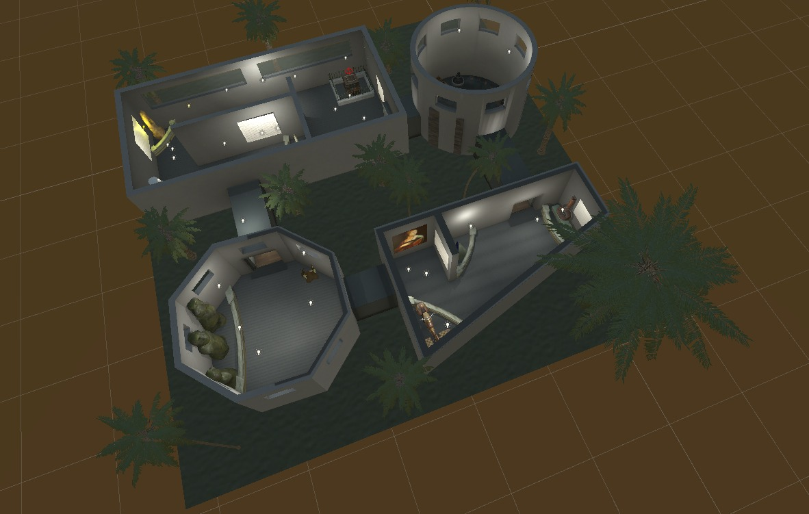
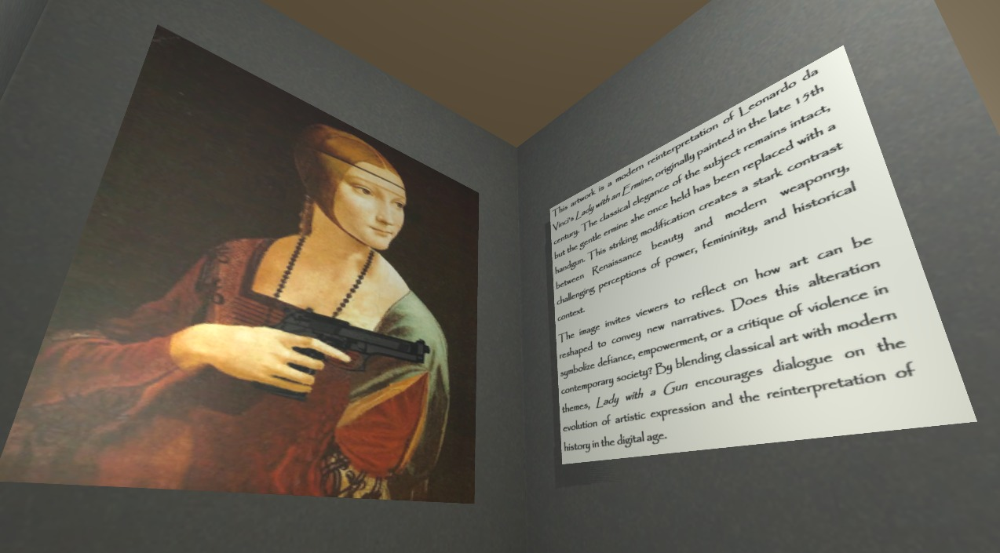
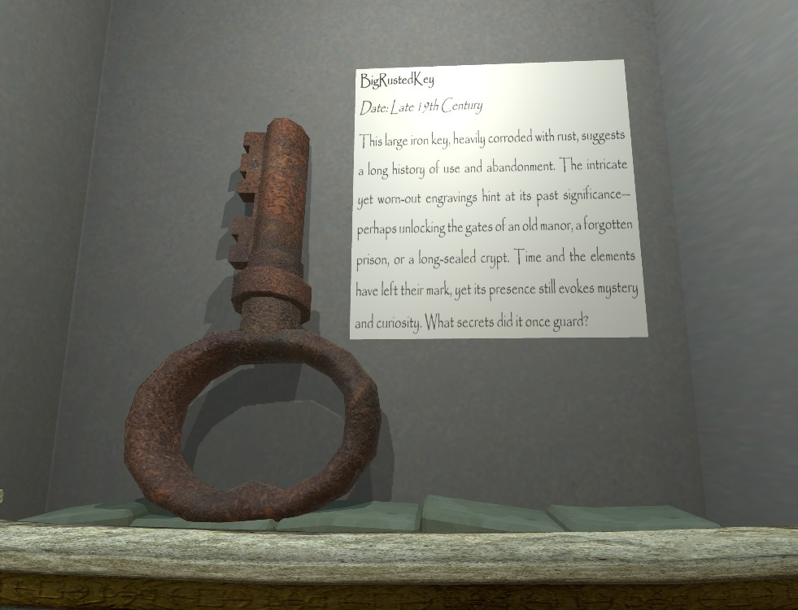
Virtual Museum Game
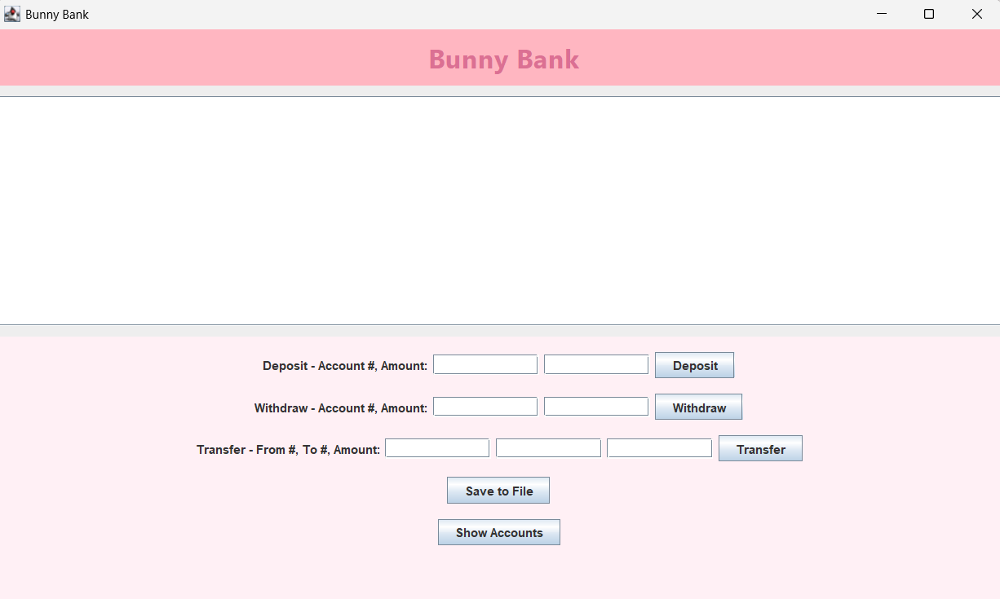
Bunny Bank System
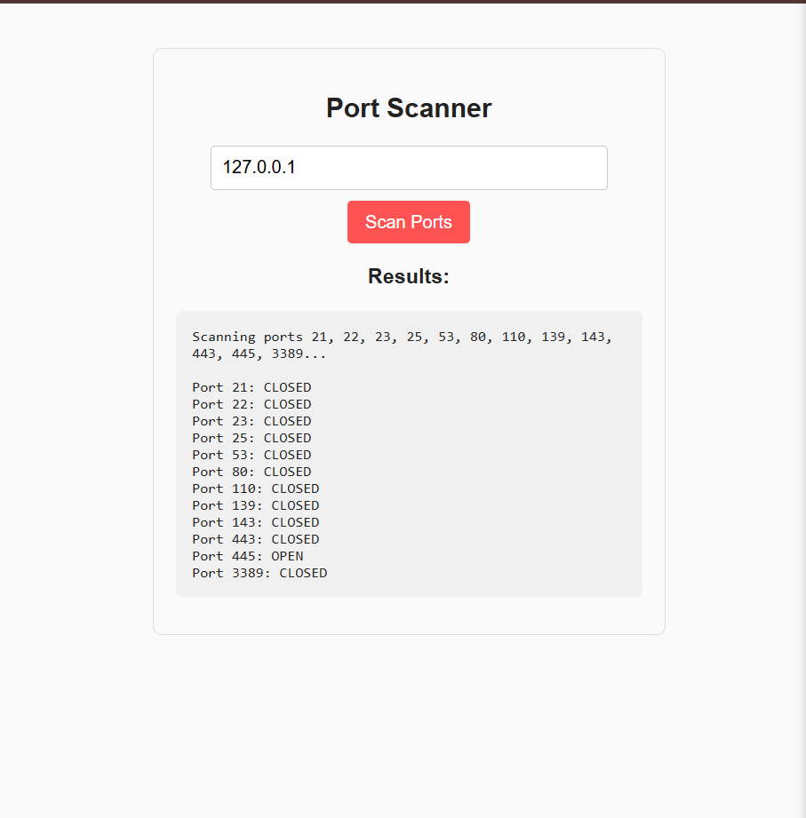
Network Port Scanner
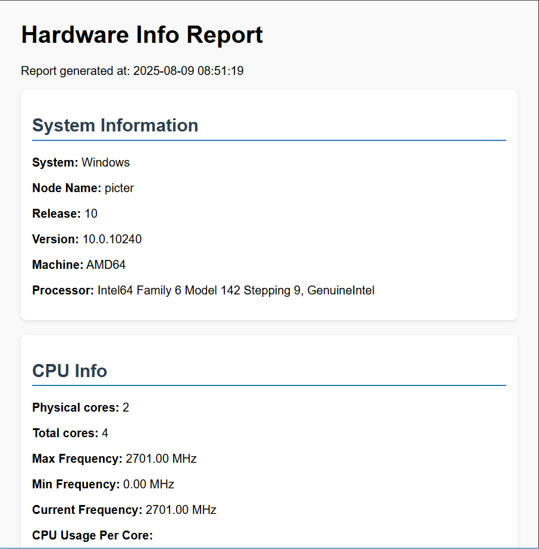
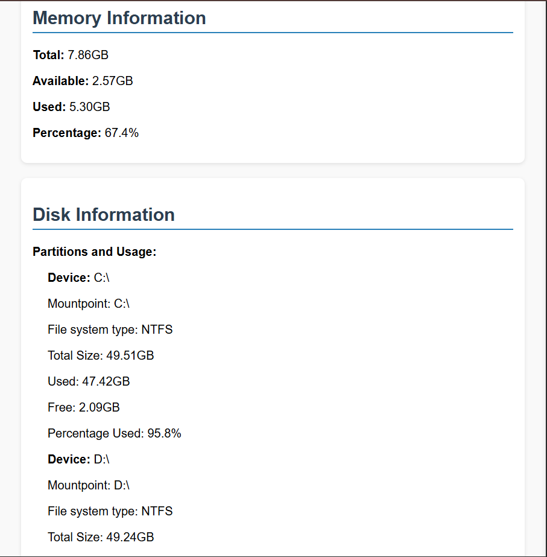
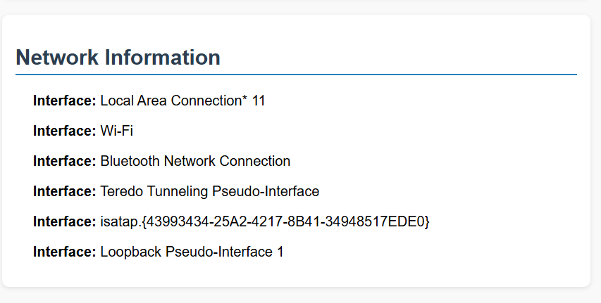
System Hardware Analyzer
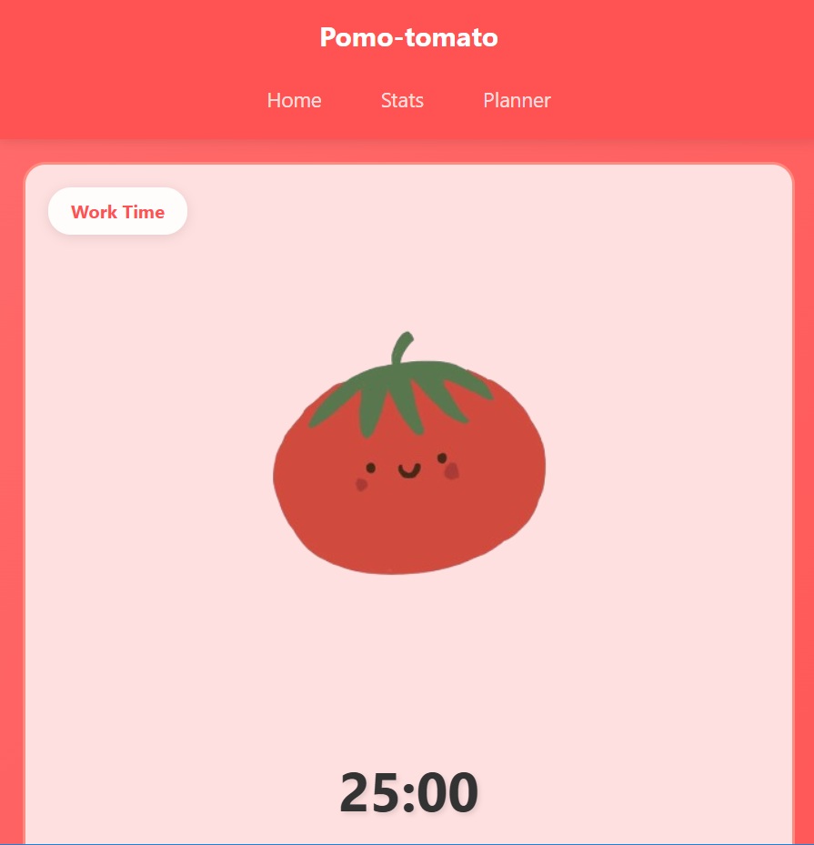
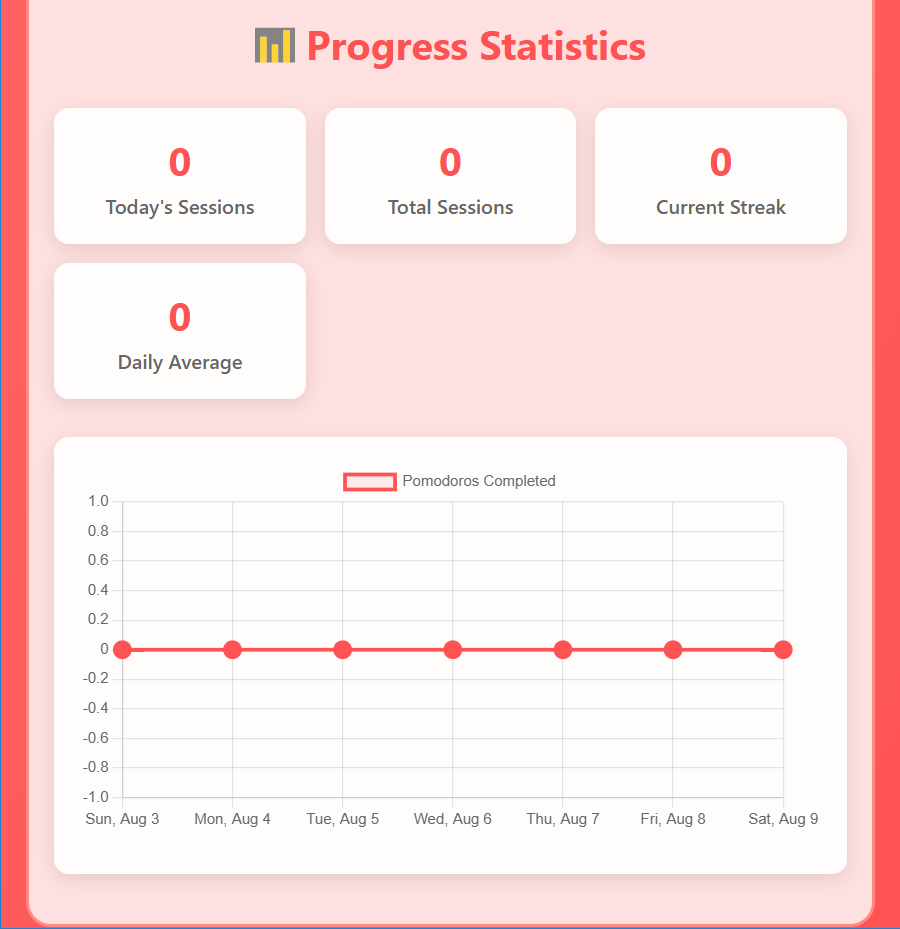
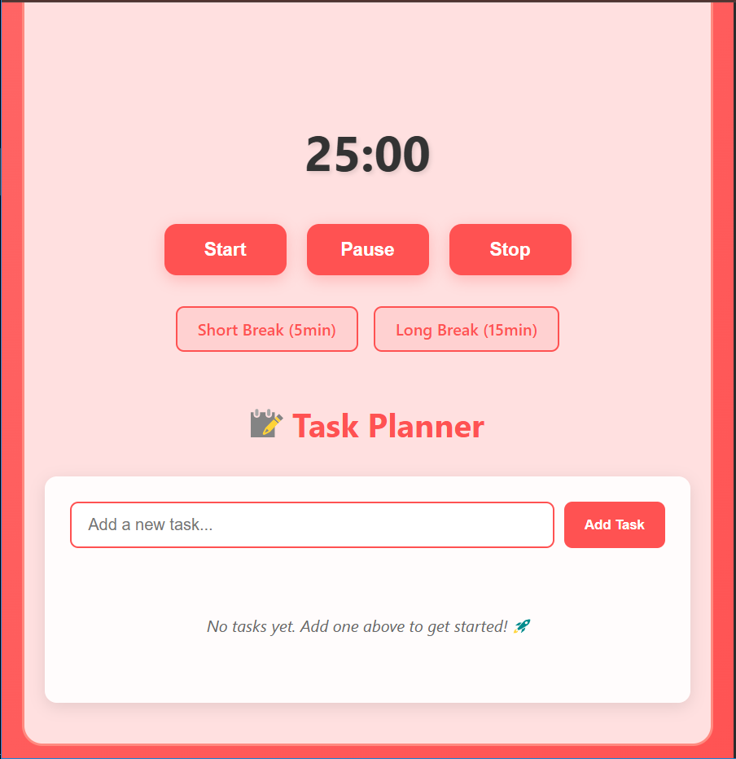
Pomodoro-Tomato
Contact